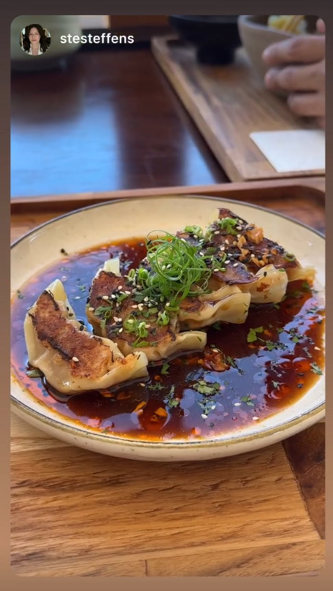
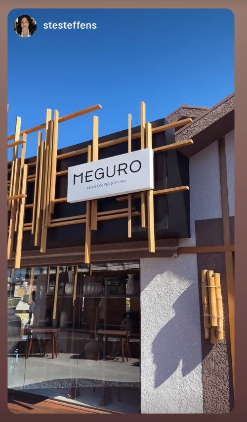
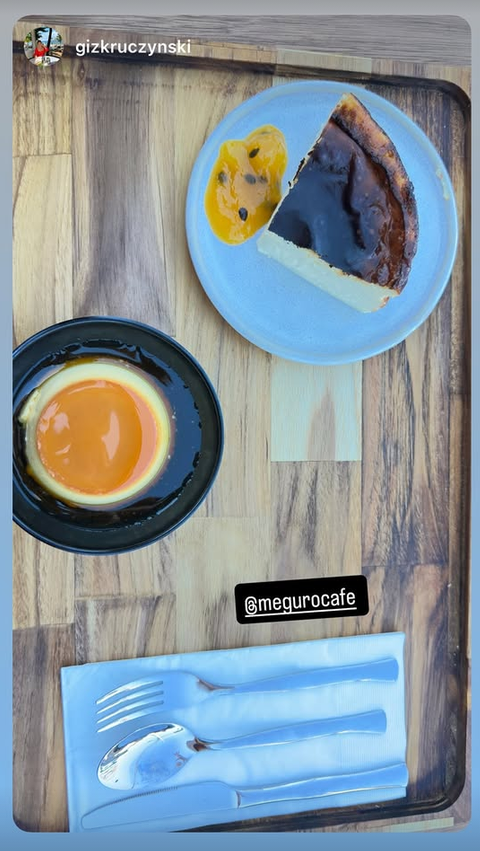
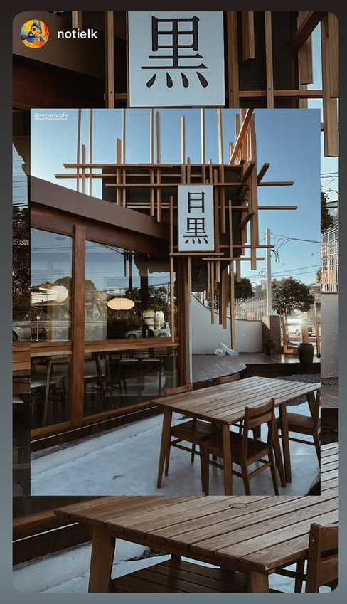

“Uma mesa que dá vontade de fotografar antes mesmo da primeira mordida.”
@stesteffens · gyoza de porco
Entre o café e a confeitaria, um encontro entre Curitiba e Tóquio. Um espaço desenhado para ser vivido devagar.
O rio Meguro, em Tóquio, fica coberto por uma folhagem de cerejeiras. Foi essa imagem que inspirou o projeto do Meguro Café.
As cerejeiras curitibanas florescem por apenas duas semanas ao ano. Por uma coincidência bonita, o Meguro abriu as portas justamente na semana em que elas floresceram.
acaso ou autenticidade?Registros reais de quem passou pelo Meguro.




Segunda a sábado, das 8h às 20h.
R. Carlos Pioli, 452 · Curitiba, Paraná.
Asian Coffee Station
Padaria & Confeitaria